Why we’re redoing it (again)
M79 shipped an OpenAI-generated roster that looked great at a glance but broke down under scrutiny. Every pose was generated independently — helmets vanished, weapons swapped, palettes drifted. A second pass with Pixel Engine helped but still struggled with cross-pose consistency.
reference_asset_id: generate one canonical portrait, then every follow-up pose inherits that character’s exact design. The Oracle test below proves the concept.
Art pipeline split
SpriteCook All character sprites — portraits, idle, attack, spell, unconscious, block. Reference-based generation keeps every pose on-model.OpenAI Background art, map tiles, environment art. These don’t need cross-frame consistency so OpenAI’s DALL-E still works well here.
The pipeline
Portrait in, full sprite set out. Each character costs ~56 credits (7 poses × 8 credits). Model: gemini-2.5-flash-image (cheapest tier).
Canonical portrait
generate_game_art — 256×256 pixel art, dark fantasy theme. This becomes the reference_asset_id for all follow-up poses.
Generate poses
6 more calls with the portrait as reference: south idle, east idle, east attack, east spell, east unconscious, east block.
Scale & crop
SpriteCook smart-crops output. ffmpeg scale=256:256:flags=neighbor normalizes to 256×256 for game use.
West = flip east
West-facing sprites generated by horizontal flip — no extra credits needed.
Optimize & deploy
optimize_images.js compresses, release.sh generates 256×256 thumbnails, deploy to GitHub Pages.
Before / after roster
All 20 hero classes have been run through SpriteCook. Compare old OpenAI/PixelLab art with the new consistent sprite sets below.
Oracle COMPLETE SpriteCook
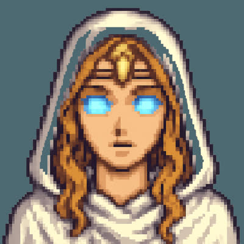
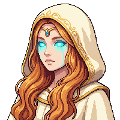
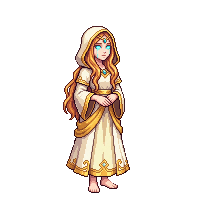
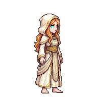
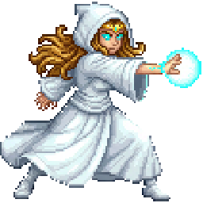
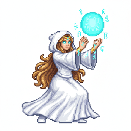
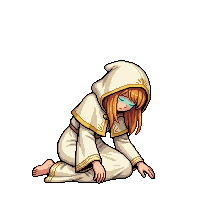
Generation prompts
Style: 16-bit SNES RPG style, cool-toned palette with cyan and gold accents
Portrait: Oracle character portrait, mystical seer in flowing white hooded robes, golden diadem circlet on forehead, long wavy golden-brown hair, glowing bright cyan eyes, serene yet powerful expression, action-ready demeanor
Attack: east-facing attack pose, casting magic spell with right hand extended forward, glowing cyan magical energy orb in hand, action pose leaning forward
Spell: east-facing spellcasting pose, both hands raised channeling a large glowing cyan magical aura above head, mystical energy swirling around hands, powerful channeling stance
KO: east-facing fallen unconscious pose, collapsed on ground face down, defeated and limp body, arms sprawled, hood fallen back
Paladin COMPLETE SpriteCook
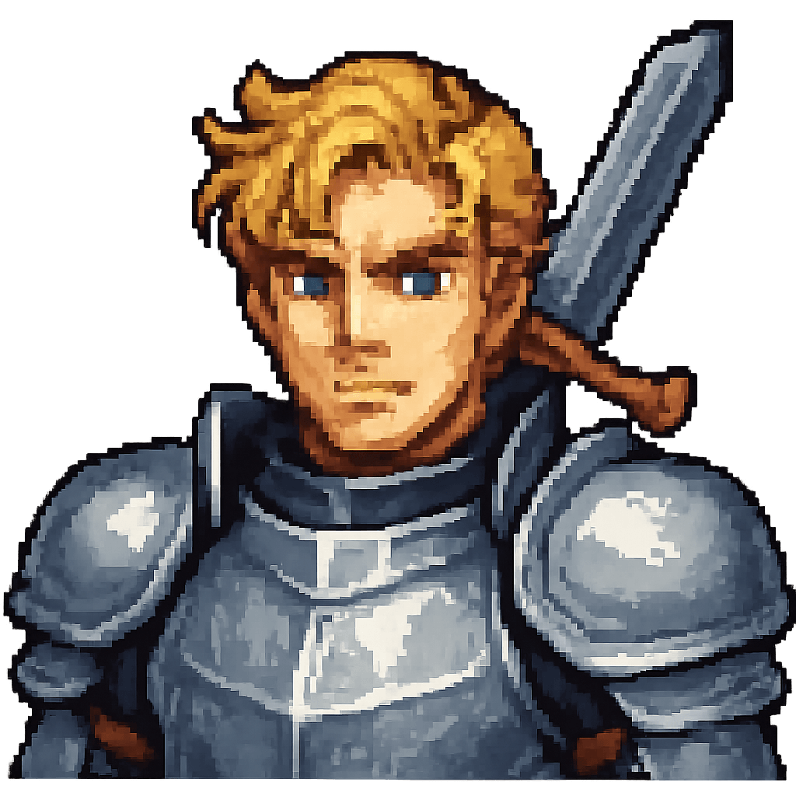
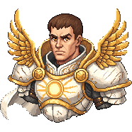
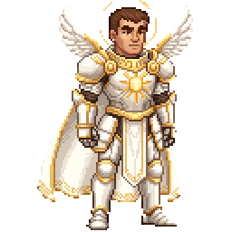
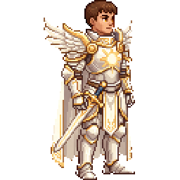
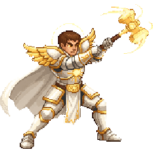
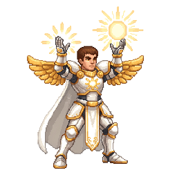
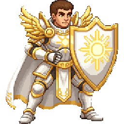
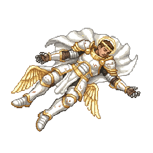
Generation prompts
Style: 16-bit SNES RPG style, warm gold and white palette with divine light accents
Portrait: Paladin character portrait, holy warrior in white and gold plate armor, golden shoulder pauldrons, glowing holy symbol on breastplate, short cropped brown hair, strong jawline, determined expression, warm amber eyes, white cape
Attack: east-facing attack pose, swinging a glowing holy warhammer forward in aggressive overhead strike, golden divine energy trailing from weapon
Spell: east-facing spellcasting pose, both hands raised channeling a large glowing golden divine aura above head, holy light radiating from palms
Block: east-facing defensive block pose, raising a large golden divine shield with holy symbol, braced defensive stance behind shield
KO: east-facing fallen unconscious pose, collapsed on ground face down, defeated and limp body, arms sprawled
Warrior COMPLETE SpriteCook
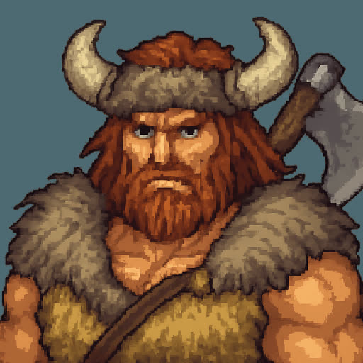
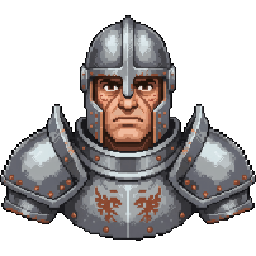
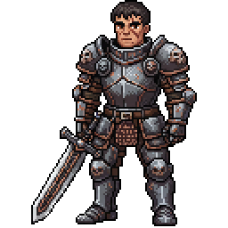
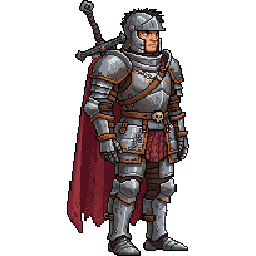
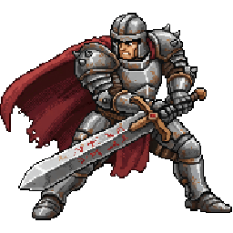
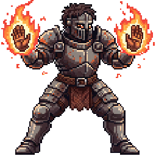
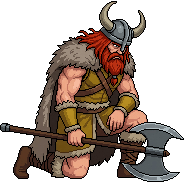
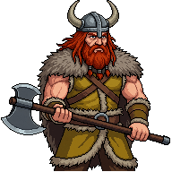
Generation prompts
Style: 16-bit SNES RPG style, steel grey and iron palette with crimson accents
Portrait: Warrior character portrait, heavy plate armor, broad-shouldered, stern face, iron helm with visor, greatsword
Attack: east-facing attack pose, swinging greatsword in powerful horizontal slash, aggressive forward stance
Spell: east-facing spellcasting pose, war cry with weapon raised, crimson energy radiating outward
Block: east-facing defensive block pose, raising heavy shield, braced defensive stance
KO: east-facing fallen unconscious pose, collapsed on ground face down, defeated and limp body, arms sprawled
Fighter COMPLETE SpriteCook
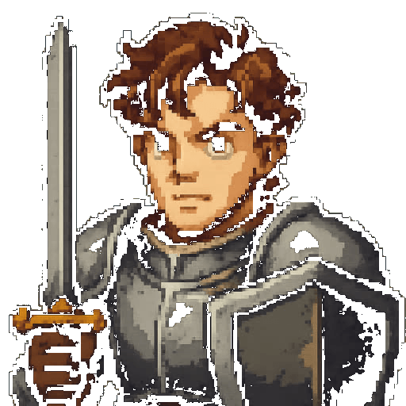
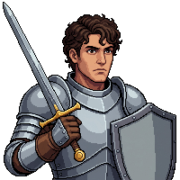
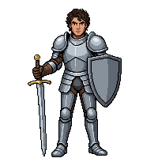
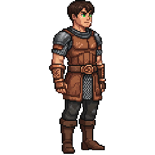
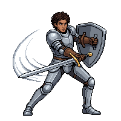
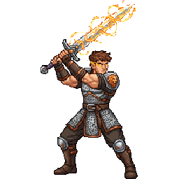
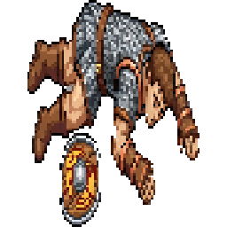
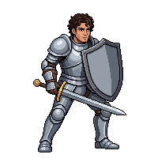
Generation prompts
Style: 16-bit SNES RPG style, warm brown and steel palette with leather accents
Portrait: Fighter character portrait, chain mail armor, athletic build, battle-scarred, leather bracers, longsword and shield
Attack: east-facing attack pose, lunging forward with longsword in aggressive thrust, shield at side
Spell: east-facing spellcasting pose, rallying battle shout with weapon raised, energy pulsing from body
Block: east-facing defensive block pose, shield raised high, braced behind shield in defensive stance
KO: east-facing fallen unconscious pose, collapsed on ground face down, defeated and limp body, arms sprawled
Ranger COMPLETE SpriteCook
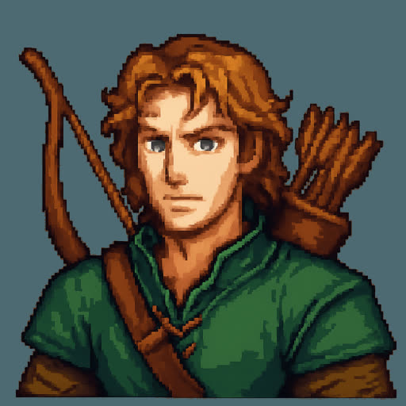
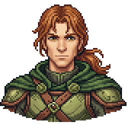
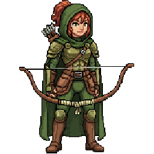
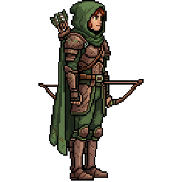
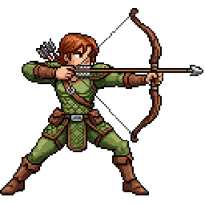
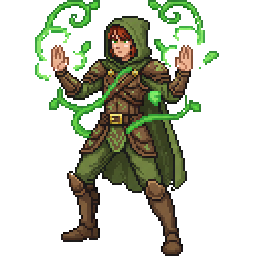
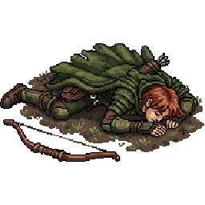
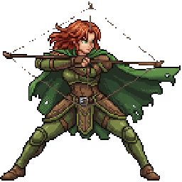
Generation prompts
Style: 16-bit SNES RPG style, forest green and brown palette with emerald accents
Portrait: Ranger character portrait, green leather armor, hooded cloak, quiver on back, lean build, bow drawn with arrow
Attack: east-facing attack pose, drawing bow with arrow nocked, aiming forward in firing stance
Spell: east-facing spellcasting pose, channeling nature energy through bow, emerald aura swirling around arrow tip
Block: east-facing defensive dodge pose, dodging sideways with cloak flowing, evasive stance
KO: east-facing fallen unconscious pose, collapsed on ground face down, defeated and limp body, arms sprawled
Rogue COMPLETE SpriteCook
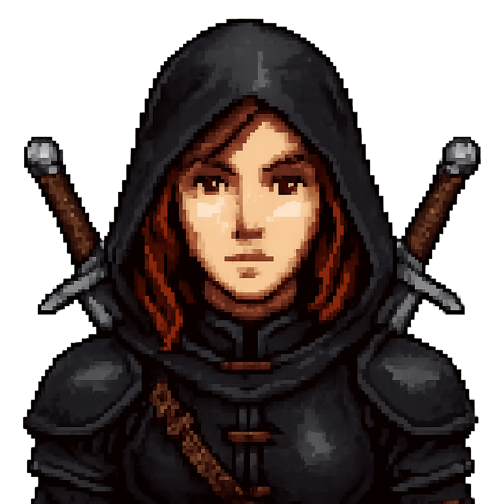
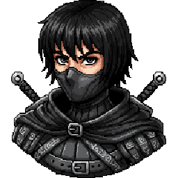
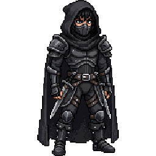
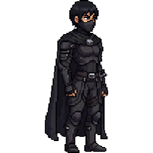
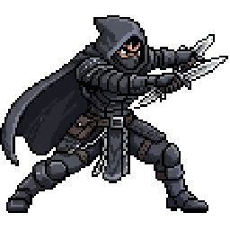
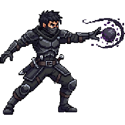
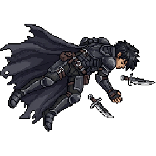
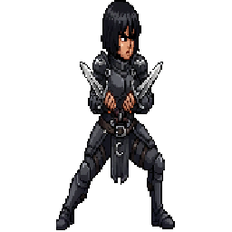
Generation prompts
Style: 16-bit SNES RPG style, dark charcoal and shadow palette with violet accents
Portrait: Rogue character portrait, dark leather armor, masked face, twin daggers at belt, agile build
Attack: east-facing attack pose, dual daggers slashing in rapid cross-slash, aggressive forward lunge
Spell: east-facing spellcasting pose, throwing shadow energy from hands, violet dark magic swirling
Block: east-facing defensive block pose, crossing daggers in X block, braced parry stance
KO: east-facing fallen unconscious pose, collapsed on ground face down, defeated and limp body, arms sprawled
Mage COMPLETE SpriteCook
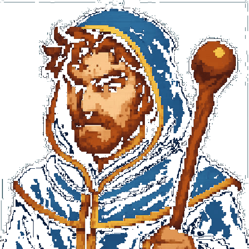
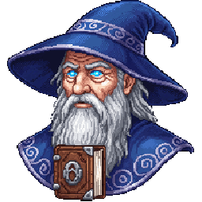
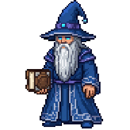
Generation prompts
Style: 16-bit SNES RPG style, deep blue and silver palette with arcane purple accents
Portrait: Mage character portrait, blue robes with silver trim, pointed hat, ancient tome, arcane energy
Attack: east-facing attack pose, launching arcane energy bolt from outstretched hand, purple magical projectile
Spell: east-facing spellcasting pose, both hands raised channeling large arcane sigil above head, purple and blue energy swirling
Block: east-facing defensive block pose, conjuring magical barrier shield of light, translucent arcane ward in front
KO: east-facing fallen unconscious pose, collapsed on ground face down, defeated and limp body, arms sprawled, hat fallen off
Necromancer COMPLETE SpriteCook
Generation prompts
Style: 16-bit SNES RPG style, sickly green and bone-white palette with dark purple accents
Portrait: Necromancer character portrait, tattered dark robes, skull staff, gaunt face, sunken glowing green eyes, bone jewelry
Attack: east-facing attack pose, thrusting skull-topped staff forward, dark necrotic energy bolt launching
Spell: east-facing spellcasting pose, arms raised summoning skeletal hands from the ground, green death energy swirling
Block: east-facing defensive pose, conjuring a bone shield wall, spectral ribcage barrier
KO: east-facing fallen unconscious pose, collapsed on ground face down, staff fallen beside
Bard COMPLETE SpriteCook
Generation prompts
Style: 16-bit SNES RPG style, warm crimson and gold palette with musical note accents
Portrait: Bard character portrait, flamboyant outfit with feathered hat, lute strapped to back, charming smile, half-cape
Attack: east-facing attack pose, slashing with a rapier in elegant fencing lunge
Spell: east-facing spellcasting pose, strumming lute with golden musical notes radiating outward
Block: east-facing defensive pose, parrying with rapier in elegant riposte stance
KO: east-facing fallen unconscious pose, collapsed on ground, lute fallen beside
Druid COMPLETE SpriteCook
Generation prompts
Style: 16-bit SNES RPG style, earthy brown and leaf green palette with amber accents
Portrait: Druid character portrait, antlered wooden crown, living bark armor, moss-covered staff, wild beard with leaves
Attack: east-facing attack pose, slamming staff into ground sending thorny vines forward
Spell: east-facing spellcasting pose, both hands glowing with nature energy, leaves and vines swirling around body
Block: east-facing defensive pose, wooden bark growing as shield from arm, rooted defensive stance
KO: east-facing fallen unconscious pose, collapsed among sprouting plants, staff fallen beside
Demon Hunter COMPLETE SpriteCook
Generation prompts
Style: 16-bit SNES RPG style, dark crimson and black palette with hellfire orange accents
Portrait: Demon Hunter character portrait, scarred face, glowing red eye tattoos, dark leather trenchcoat, crossbow and demon-bone blade
Attack: east-facing attack pose, firing wrist-mounted crossbow, bolt trailing hellfire
Spell: east-facing spellcasting pose, channeling demonic sigil from palm, red and orange runic circle
Block: east-facing defensive pose, raising demon-bone blade in cross-guard block
KO: east-facing fallen unconscious pose, collapsed on ground face down, weapons scattered
Tactician COMPLETE SpriteCook
Generation prompts
Style: 16-bit SNES RPG style, navy blue and brass palette with tactical map accents
Portrait: Tactician character portrait, military officer coat, epaulettes, monocle, war maps tucked under arm, commanding stance
Attack: east-facing attack pose, pointing command baton forward directing troops, tactical energy lines
Spell: east-facing spellcasting pose, projecting holographic battle map from hands, blue tactical grid
Block: east-facing defensive pose, raising baton with protective formation barrier
KO: east-facing fallen unconscious pose, collapsed on ground, maps scattered around
Chronomancer COMPLETE SpriteCook
Generation prompts
Style: 16-bit SNES RPG style, teal and bronze palette with clockwork accents
Portrait: Chronomancer character portrait, bronze clockwork monocle, teal robes with gear patterns, floating hourglasses, time distortion aura
Attack: east-facing attack pose, throwing temporal blast forward, clock hands and gears in the energy
Spell: east-facing spellcasting pose, large clock sigil rotating above head, time-freeze energy radiating
Block: east-facing defensive pose, slowing time bubble around self, distorted space shield
KO: east-facing fallen unconscious pose, collapsed with broken hourglass beside, sand spilling
Stormcaller COMPLETE SpriteCook
Generation prompts
Style: 16-bit SNES RPG style, electric blue and storm grey palette with lightning accents
Portrait: Stormcaller character portrait, crackling electric aura, storm-grey robes, lightning rod staff, wind-swept white hair
Attack: east-facing attack pose, launching chain lightning bolt from staff, branching electric arcs
Spell: east-facing spellcasting pose, calling down thunderstorm from above, arms raised with massive lightning strike
Block: east-facing defensive pose, static discharge shield crackling around body
KO: east-facing fallen unconscious pose, collapsed with residual sparks, staff broken beside
Dragon Knight COMPLETE SpriteCook
Generation prompts
Style: 16-bit SNES RPG style, dragon-scale red and obsidian palette with fire accents
Portrait: Dragon Knight character portrait, dragon-scale plate armor, horned helm, dragon-fang lance, fiery eyes, draconic pauldrons
Attack: east-facing attack pose, thrusting dragon-fang lance forward with fire trail
Spell: east-facing spellcasting pose, breathing dragon fire from open mouth, draconic aura flaring
Block: east-facing defensive pose, shield with dragon emblem raised, dragon-scale armor glowing
KO: east-facing fallen unconscious pose, collapsed in heavy armor, lance fallen beside
Swashbuckler COMPLETE SpriteCook
Generation prompts
Style: 16-bit SNES RPG style, ocean blue and gold trim palette with seafoam accents
Portrait: Swashbuckler character portrait, pirate captain coat, tricorn hat with feather, dual cutlasses, roguish grin, gold earring
Attack: east-facing attack pose, dual cutlass cross-slash, acrobatic forward lunge
Spell: east-facing spellcasting pose, conjuring ocean wave energy from blade, seafoam swirl
Block: east-facing defensive pose, parrying with crossed cutlasses, dashing riposte
KO: east-facing fallen unconscious pose, collapsed with hat fallen off, cutlasses dropped
Scavenger COMPLETE SpriteCook
Generation prompts
Style: 16-bit SNES RPG style, rust brown and salvage grey palette with copper accents
Portrait: Scavenger character portrait, patchwork armor from salvaged parts, goggles on forehead, oversized backpack, tool belt, improvised crossbow
Attack: east-facing attack pose, firing improvised crossbow with scrap-metal bolt
Spell: east-facing spellcasting pose, throwing explosive gadget from belt, sparks and gears flying
Block: east-facing defensive pose, raising salvaged metal shield, crouching behind junk barrier
KO: east-facing fallen unconscious pose, collapsed with scattered tools and scrap
Pyromancer COMPLETE SpriteCook
Generation prompts
Style: 16-bit SNES RPG style, blazing orange and magma red palette with ember accents
Portrait: Pyromancer character portrait, flame-patterned robes, fire dancing from fingertips, ember-filled eyes, ashen skin marks
Attack: east-facing attack pose, hurling fireball forward from palm, trailing flame
Spell: east-facing spellcasting pose, both arms raised conjuring massive fire tornado above head
Block: east-facing defensive pose, wall of flames rising as shield barrier
KO: east-facing fallen unconscious pose, collapsed with embers dying out around body
Warlock COMPLETE SpriteCook
Generation prompts
Style: 16-bit SNES RPG style, dark violet and shadow-black palette with eldritch green accents
Portrait: Warlock character portrait, horned circlet, dark flowing robes with eldritch symbols, glowing green tome, shadowy tendrils
Attack: east-facing attack pose, launching eldritch blast from hand, green-purple void energy
Spell: east-facing spellcasting pose, channeling dark pact energy from grimoire, void portal opening
Block: east-facing defensive pose, shadow tendrils forming protective cocoon
KO: east-facing fallen unconscious pose, collapsed with tome fallen open, dark energy fading
Cleric COMPLETE SpriteCook
Generation prompts
Style: 16-bit SNES RPG style, white and sky-blue palette with holy light accents
Portrait: Cleric character portrait, white vestments with blue trim, holy symbol pendant, healing staff with crystal, gentle expression
Attack: east-facing attack pose, swinging holy mace forward with divine light trail
Spell: east-facing spellcasting pose, hands glowing with warm healing light, golden cross sigil above
Block: east-facing defensive pose, holy barrier of light forming around body
KO: east-facing fallen unconscious pose, collapsed with staff beside, fading holy glow
Companions
All 10 class pets have been generated through SpriteCook. Each companion has a portrait plus 4 pose variants (south, east, attack, KO). These are brand-new assets with no prior art to compare against.
Arcane Familiar COMPLETE SpriteCook
Generation prompts
Style: 16-bit SNES RPG style, dark purple and midnight black palette with arcane accents
Portrait: Arcane familiar cat, small magical black cat with glowing purple eyes, faint arcane runes floating around it
South: south-facing idle pose, sitting and looking toward camera
East: east-facing side view idle pose, standing on all fours looking right
Attack: east-facing attack pose, pouncing forward with claws out, purple arcane energy trailing from paws
KO: east-facing KO defeated pose, lying on side unconscious, eyes closed
Imp COMPLETE SpriteCook
Generation prompts
Style: 16-bit SNES RPG style, hellfire red and charcoal palette with flame accents
Portrait: Small mischievous imp, red skin, tiny horns, bat wings, glowing yellow eyes, impish grin
South: south-facing idle, hovering with wings flapping
East: east-facing idle, floating with wings out
Attack: east-facing attack, throwing small fireball from clawed hand
KO: east-facing KO, crumpled on ground with wings folded
Wolf COMPLETE SpriteCook
Generation prompts
Style: 16-bit SNES RPG style, grey and silver palette with ice-blue accents
Portrait: Loyal wolf companion, grey and white fur, ice-blue eyes, alert stance
South: south-facing idle, sitting attentively
East: east-facing idle, standing on all fours, alert
Attack: east-facing attack, lunging with jaws open, biting
KO: east-facing KO, lying on side, eyes closed
Bear COMPLETE SpriteCook
Generation prompts
Style: 16-bit SNES RPG style, warm brown and honey palette with earth accents
Portrait: Large brown bear companion, thick fur, powerful build, calm but alert expression
South: south-facing idle, sitting on haunches
East: east-facing idle, standing on all fours
Attack: east-facing attack, rearing up on hind legs swiping with massive paw
KO: east-facing KO, collapsed on side
Fire Elemental COMPLETE SpriteCook
Generation prompts
Style: 16-bit SNES RPG style, blazing orange and magma red palette
Portrait: Small fire elemental, living flame creature, flickering body, ember eyes
South: south-facing idle, floating and flickering
East: east-facing idle, hovering with flame body
Attack: east-facing attack, launching fire bolt forward
KO: east-facing KO, reduced to dying embers on ground
Demon COMPLETE SpriteCook
Generation prompts
Style: 16-bit SNES RPG style, deep crimson and shadow palette with hellfire accents
Portrait: Small demon companion, dark red skin, curved horns, glowing eyes, leathery wings
South: south-facing idle, standing with arms crossed
East: east-facing idle, standing with tail swishing
Attack: east-facing attack, slashing with claws, dark energy trailing
KO: east-facing KO, crumpled on ground
War Hound COMPLETE SpriteCook
Generation prompts
Style: 16-bit SNES RPG style, dark brown and iron palette with leather accents
Portrait: Armored war hound, muscular mastiff with leather barding, spiked collar, battle-scarred
South: south-facing idle, sitting at attention
East: east-facing idle, standing guard
Attack: east-facing attack, leaping forward with jaws snapping
KO: east-facing KO, lying on side
Lightning Elemental COMPLETE SpriteCook
Generation prompts
Style: 16-bit SNES RPG style, electric blue and white palette with spark accents
Portrait: Small lightning elemental, crackling electric form, bright blue core, arcing sparks
South: south-facing idle, floating and crackling
East: east-facing idle, hovering with sparks
Attack: east-facing attack, zapping bolt of lightning forward
KO: east-facing KO, fading sparks on ground
Skeletal Warrior COMPLETE SpriteCook
Generation prompts
Style: 16-bit SNES RPG style, bone white and rusted iron palette with necrotic green accents
Portrait: Skeletal warrior minion, animated skeleton in rusted armor, glowing green eye sockets, rusty sword
South: south-facing idle, standing at attention
East: east-facing idle, standing with sword ready
Attack: east-facing attack, slashing with rusty sword
KO: east-facing KO, bones collapsed in pile
Bone Golem COMPLETE SpriteCook
Generation prompts
Style: 16-bit SNES RPG style, ivory and dark grey palette with necrotic purple accents
Portrait: Bone golem, hulking construct of fused bones, glowing purple runes, massive bone fists
South: south-facing idle, standing imposingly
East: east-facing idle, heavy stance
Attack: east-facing attack, smashing forward with bone fist
KO: east-facing KO, crumbling into bone pile
Combat backgrounds
26 painted zone backgrounds now replace the procedural sky + parallax during combat. Wired into CombatScreen._drawBackground() and gated by the "Disable Backgrounds" setting. Style prompt: dark fantasy painterly matte, portrait aspect, 16-bit-inspired palette, dramatic horizon.
Border Roads (Act 1)
Prompt: Twilight mountain pass, dust-blown wagon ruts, distant watchtower, storm clouds on the horizon.
Thornwood (Act 1)
Prompt: Dense cursed forest with thorny undergrowth, crooked silhouettes, emerald fog creeping between trunks.
Dust Roads (Act 2)
Prompt: Arid caravan trail, cracked earth, scorched mesas on the skyline, burnt-orange sunset.
Ember Plateau (Act 2)
Prompt: Volcanic tableland, drifting embers, lava-veined basalt cliffs, brooding red sky.
Hell Breach (Act 3)
Prompt: Cracked battlefield with a glowing rift to the underworld, lava geysers, infernal haze.
Shattered Core (Act 3)
Prompt: Broken ley-line crystals, violet arcane lightning arcing between shards, floating debris.
Cosmic Rift (Act 4)
Prompt: Deep-space tear overlaid on a shattered battlefield, swirling nebulae, gravity-warped stars.
Eternal Void (Act 4)
Prompt: Pitch-black abyss with faint violet constellations, floating ruins, endless silence.
Abyssal Depths (Act 5)
Prompt: Sunken trench with bioluminescent kelp, leviathan silhouettes, pressure-crushed ruins.
Primordial Nexus (Act 5)
Prompt: Magenta arcane confluence, swirling birth-of-creation energies, concentric runic rings.
Dragon's Reach (Act 6)
Prompt: Towering spires with wyrm scales embedded in stone, sulfurous red clouds, dragonfire glow on the horizon.
Dragon Throne (Act 6)
Prompt: Obsidian throne hall of the Dragon King, molten gold veins, colossal skeletal wyrm ribcage vaulting overhead.
Progress and cost
30 of 73 characters complete (20 heroes + 10 companions) + 26 zone backgrounds wired in. 43 characters remaining.
Remaining: 43 characters × 7 poses × 8 credits = ~2,408 credits
Apprentice ($6/mo, 800 credits) — ~3 months
Adventurer ($24/mo, 3,000 credits) — under 1 month
Archmage ($56/mo, 7,000 credits) — under 1 month